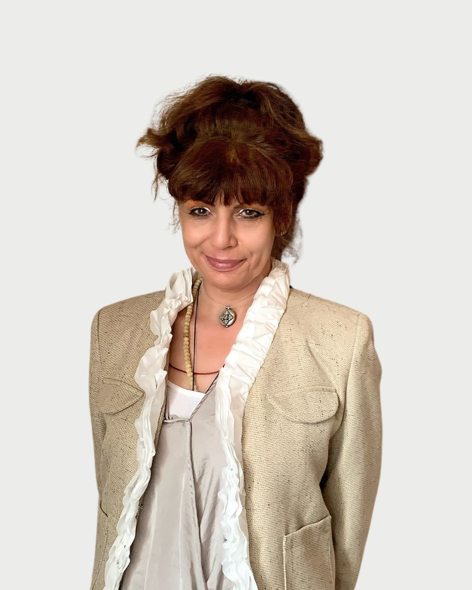

Regiszter 08 · Szakpszichoterapeuta
Dr. Fehér Pálma Virág
Amiben segítek
Dr. Fehér Pálma Virág saját megfogalmazásában. Ha a listában nem találja a saját helyzetét, az első beszélgetésen ezt is megbeszélik.
- Szorongásos zavarok, pánikbetegség
- Depressziós zavarok
- Gyász
- Testképzavarok
- Alvászavarok
- Evészavarok
- Személyiségzavarok egyes típusai
- Önismeret fejlesztése, önrálátás megalapozása
- Kiégés megelőzése és kezelése
- Egyéni pszichoterápia
- Tanácsadás
- Önismereti vezetés
Bemutatkozás
Dr. Fehér Pálma Virág saját szavaival. Egy alkalom díja 25-30 ezer forint. A díjakról
Régóta foglalkozom a lélek gyógyításával. " kérdés mindig foglalkoztatott, és tudom, hogy mindenki már a születés pillanatától boldogságra vágyik a szenvedés helyett.
a szenvedés helyett. Ezen semmiféle körülmény vagy adottság nem változtat, mert úgy vélem, hogy emberi lényegünkből eredően mindannyian megelégedésre vágyunk.
Ezért olyan fontos feltárni annak hátterét, hogy mi adhatja meg számunkra a boldogság érzését, és hogyan élhetjük bölcsebben az életünket. De vallom, hogy az is legalább ilyen fontos kérdés, hogy megtaláljuk a szenvedés megfelelő kifejezési formáit. Ebben a folyamatban tudom egy ideig kísérni, ha szeretné.
Tisztelettel,
Fehér Pálma Virág
A jövő közelebb van a jelenhez, mint a múlt." S. Kierkegaard
Néha nem elég, ha csak az elménkkel dolgozunk, a testünket és a csatornáinkat is igénybe kell vennünk az átalakulásunk biztosításához. A jóga és más gyakorlatok megmutatják nekünk, hogy minden energia: a harag, a féltékenység, a büszkeség és a többi érzelem. Hagyjuk őket a felszínre törni, és ha haraggal kezdjük is, a végén jó eredményt érünk el. Erről szól a jó szokások gyakorlása. Nem azt mondjuk, hogy most "hagyjuk abba a haragot, vagy "hagyjuk abba és fejezzük be ezt vagy azt az érzelmet". Ehelyett az érzelmeink mesterévé válunk azzal, hogy felismerjük: képesek vagyunk dolgozni az érzelmek energiájával.
Hitvallás
Képzés és szakmai út
28 tétel. A képzések és a szupervízió az akkreditált szakképzőhely rendjében folynak. Mit jelent ez Önnek
Iskolai végzettség, módszerspecifikus Képzések
Szakmai tapasztalatok
Tagságok
Tanítómesterek
- Dr. C. Molnár Emma(AKAPE (Aktív-Analitikus Pszichoterapeuta Egyesület))
- Dr. Süle Ferenc(Magyar C.G.Jung Analitikus Egyesület)
- Dr. Zánkay András(Magyar Pszichodráma Egyesület)
- Dr. Ormay István(AKAPE)
- Dr. Duba Andrea(AKAPE)
- Dr. Harrach Andor(BT (Magyarországi Bálint Mihály Pszichoszomatikus Orvostudományi Társaság))
- Dr. Dobó Katalin(BT (Magyarországi Bálint Mihály Pszichoszomatikus Orvostudományi Társaság))
- Dr. PeterGeißler (Steißlinger Kreis)
- Dr. Gabriele Poettgen-Haverkost(Steißlinger Kreis)
- Dr. Richard Meyer(EEPSSA) (Ecole Européenne de Psychothérapie Socio-& Somato-Analytique)
- Dr. Nida Chenagtsang(IATTM) (International Academy for Traditional Tibetan Medicine)
Regiszter 08
Időpont Dr. Fehér Pálma Virágnál
Az ügyfélszolgálat hétköznap 9 és 15 óra között egyeztet. Ha bizonytalan, hogy Ön kihez tartozik, azt is megbeszélik, és ha kell, más kollégát javasolnak.